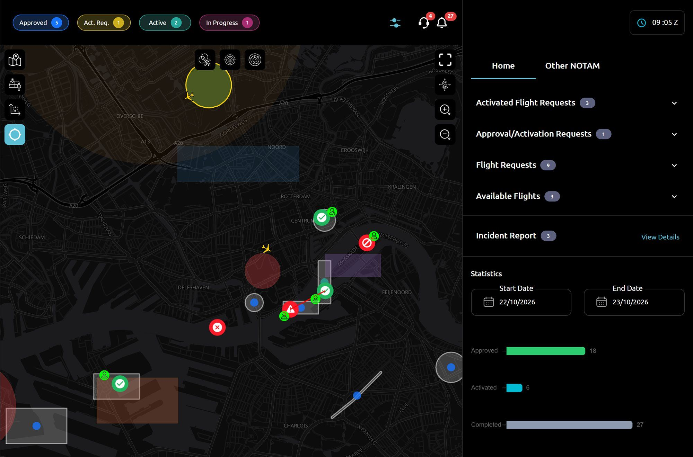

Senior Frontend Developer
Hamzah Hashmi
React · JavaScript · TypeScript · Testing
Five years at AstraUTM, a Thales company, building the web apps that aviation authorities and drone operators use to approve flights, run the control room and keep airspace safe, for clients in the UAE and Finland.
Dubai, UAE

Selected work
16 case studies
AstraUTM builds drone traffic management software for aviation authorities. I worked across its web products, from the first React app to the current platform.
AstraUTM platform · built with React 18, Vite, TanStack Query, Mapbox
SCNS, the UAE drone platform · built with React 16, Google Maps
Authority portal · built with ASP.NET MVC, jQuery, Google Maps
Fintraffic Sky, Finland · built with ASP.NET MVC, Google Maps
TypeScript platform (2024) · built with TypeScript, TanStack Router, Zod
-
A notification centre with live alerts and sound
Pilots and authority staff get every update in one place: unread counts on the bell, three tabs, links straight to the record, and a sound when something new arrives. I built the feature and later rebuilt its data layer.
-
A ready signal for the live dashboard
The dashboard loads eight data sources at once. I made it announce on its root element when every one of them has rendered, and how long that took, so automated tests can start at exactly the right moment.
-
Test IDs and Cypress page objects for the QA team
The QA team's Cypress suite needs stable hooks into the UI. I added half of the app's test IDs and wrote TypeScript page objects for the screens they cover.
-
Unit and component tests
I write tests with every feature, using Vitest, React Testing Library and MSW, including the shared components the whole app uses. 330+ of the platform's test cases are mine.
-
One form to create and edit operator users
Every authority defines its own extra fields for operator users. I rebuilt the create and edit pages as one template-driven form that replaced three older components.
-
A tactical view for approving authorities
Authorities that approve flights close to take-off care about the next hour, not the whole day. I added a default view per authority and a tactical window that filters the dashboard.
-
Population density on the map
A flight over people carries more risk. I added a population layer to the map and an estimate of how many people live under a point or a planned flight area.
-
Airspace conflicts while planning a flight
While a pilot draws a flight area, the form shows which zones it crosses and which approved flights it overlaps, before the request is sent.
-
Code reviews
I reviewed 120 merge requests that went into the AstraUTM platform, and I run colleagues' changes locally before approving.
-
More work on the AstraUTM platform
Live COMMS alerts, flight priority settings, billing history.
-
The flight-request review page
Authority staff decide on every drone flight request from this page. I created it in 2022, extended it for four years, and in 2025 split it into 12 focused components.
-
Organisation approval and payment requests
Commercial operators must be approved, and often pay a registration fee, before they can fly. I built the authority's review screens and one payment component used in four approval flows.
-
Security fixes and safe navigation
In 2025 I worked through security findings in the first-generation app, from how attachments are opened to how every page builds its breadcrumb.
-
More work on SCNS
Resubmitting a rejected application, today's flights, pilot and company sign-up.
-
Two-step sign-in for the control-room portal
Staff sign in with a password and a one-time code, and operators sign in with the national digital ID. I built both flows in the authority's ASP.NET portal.
-
Live traffic alerts in the control room
Control-room staff watch every live drone and aircraft on one map. In the authority portal I added clustering for busy areas, a repeating alarm for unauthorised drones, pilot positions and fuller altitude details.
-
Airspace layers on a public map
Fintraffic Sky shows drone pilots in Finland which airspace applies where. I built the map layers that make zone types easy to tell apart.
-
Building the platform in TypeScript
In 2024 the team built a TypeScript version of the platform. I wrote 3,100+ lines of it: zone, alert and deconfliction screens and their typed APIs.
About me
I build React features end to end and make them easy to test
Real-time dashboards, notifications and alerts, approval workflows and secure sign-in. I ship features with their unit tests and the test IDs QA automation relies on.
What I work on most
- Real-time features: notifications, alerts with sound, live COMMS and map layers, on TanStack Query and Zustand.
- Approval workflows for flight requests, organisations and operators, including amendments and payments.
- Testability: 330+ unit test cases, 260+ test IDs and Cypress page objects for the QA team.
- Front-end security: authenticated downloads, session-expiry handling, safe routing and dependency fixes.
- Release integration: promoting builds from development to staging and production.
Skills
- Frontend
- React, JavaScript (ES6+), TypeScript, HTML, CSS, SCSS, Bootstrap, Tailwind, Vite, webpack
- Data and state
- TanStack Query (infinite queries, optimistic updates), Zustand, React Context, Redux, React Hook Form, Zod
- Maps
- Mapbox GL JS, deck.gl, Google Maps JavaScript API, Turf.js
- Testing
- Vitest, Jest, React Testing Library, MSW, Cypress (page objects)
- Security
- OTP and national-ID sign-in, authenticated file access, SonarQube and Snyk findings
- Platform
- ASP.NET MVC (Razor, jQuery), i18next and Paraglide, Arabic right-to-left
- Tools
- Git, GitLab, GitHub, CI/CD, SonarQube, Snyk
Contact
Get in touch
Senior Frontend Developer, based in Dubai, UAE.